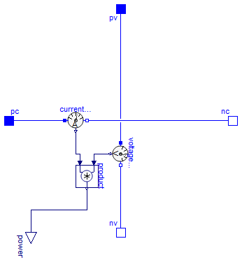

Sensor to measure the current in a branch
The current sensor converts the current flowing between the two connectors into a real valued signal. The two connectors are in the sensor connected like a short cut. The sensor has to be placed within an electrical connection in series. It does not influence the current sum at the connected nodes. Therefore, the electrical behavior is not influenced by the sensor.
Extends from Modelica.Icons.RotationalSensor (Icon representing a round measurement device).
| Type | Name | Description |
|---|---|---|
| PositivePin | p | positive pin |
| NegativePin | n | negative pin |
| output RealOutput | i | Current in the branch from p to n as output signal [A] |
Sensor to measure the voltage between two pins

The voltage sensor converts the voltage between the two connectors into a real valued signal. It does not influence the current sum at the nodes in between the voltage is measured, therefore, the electrical behavior is not influenced by the sensor.
Extends from Modelica.Icons.RotationalSensor (Icon representing a round measurement device).
| Type | Name | Description |
|---|---|---|
| PositivePin | p | positive pin |
| NegativePin | n | negative pin |
| output RealOutput | v | Voltage between pin p and n (= p.v - n.v) as output signal [V] |
Sensor to measure the power

This power sensor measures instantaneous electrical power of a singlephase system and has a separated voltage and current path. The pins of the voltage path are pv and nv, the pins of the current path are pc and nc. The internal resistance of the current path is zero, the internal resistance of the voltage path is infinite.
Extends from Modelica.Icons.RotationalSensor (Icon representing a round measurement device).
| Type | Name | Description |
|---|---|---|
| PositivePin | pc | Positive pin, current path |
| NegativePin | nc | Negative pin, current path |
| PositivePin | pv | Positive pin, voltage path |
| NegativePin | nv | Negative pin, voltage path |
| output RealOutput | power | Instantaneous power as output signal [W] |